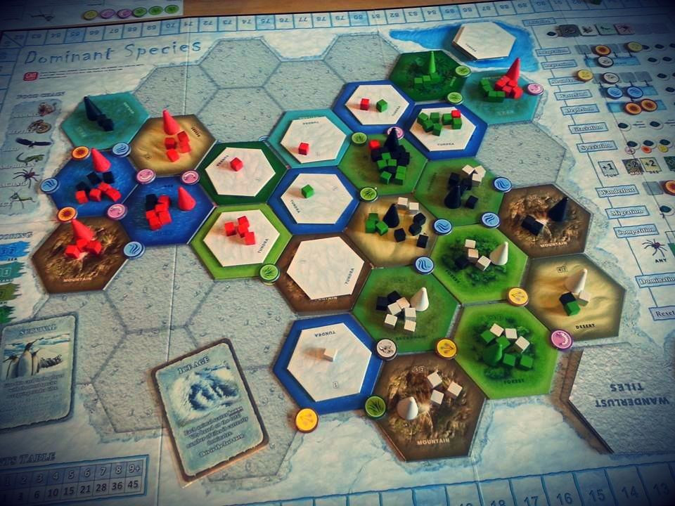

Number 5
Dominant Species

It’s a competative area control type game where player try to be the Dominant species in each hexagon area. Player start by taking turns queueing up which action they want to do. Then when everyone has done so all the action happens fast. It fun because the person on top is a easy target and trying to maneuver between the many species and take as much land for yourself is. It can be a bit cutthroat at times but in my opinion that's what makes it fun.
Number 4
Battlestar Galactica: The boardgame
I have never actually seen the show but this board game is even better than it's theme. It's pretty much a starship survival game where you try to get to the end planet before the ship is destroyed by the bad guys or the you run out of resources. Player role change about midway through the game and they try to sabotage your trip with revealing themselves. When you make the last jump just as the enemy is surround you is really satisfying.
Number 3
Near and Far
This is an adventure game where you travel across many maps gain resource and abilities all through a unique story. You encounter different mission and its your decision and ability that change outcomes. I like it because it's a journey you and your friend take. It a nice experience and its not too cutthroat.
Number 2
Wingspan
It's about birds, man. Collecting bird and making you area the best bird area in the game. Also every card has a unique bird on it. It's just a fun theme and it can be friendly as you like. It also helps that its the best put together board game I've seen.
Number 1
Gloomhaven
This is a massive game that can take over 100hr to play. It's a dungeon crawler where you work together to get through each dungeon. The bosses are unique so are the quest. I haven't seen everything in the game yet and am still excited to see what there is to explore
monopoly is boring. roll the dice move the mice. buy everything you can. you win or they win depending on who's luckier.